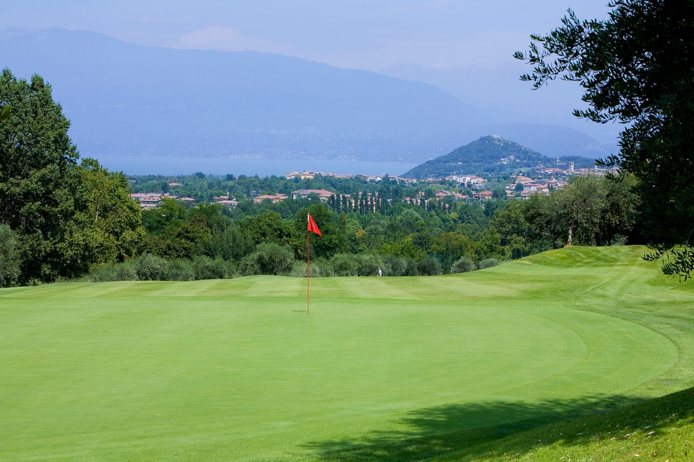

Day 1: Saturday — Depart
This evening depart from your country.

This evening depart from your country.
You will arribe at the Catania airport and transfer to your rental vehicle. Drive 90 minutes south to Donnafugata Golf Resort & SPA and check-in. The rest of the day is at your leisure to enjoy the amenities of this exceptional five-star resort. The luxurious Donnafugata Golf Resort & SPA is a heavenly place for anyone wishing to experience an unforgettable stay in one of the most enchanting places in Sicily. It is located just 10 minutes drive from historic Ragusa. This the host of the 2011 European Tour's Sicilian Open is a golf lovers paradise with two championship layouts, a Spa and fitness center, swimming-pools and three restaurants.
Overnight: Donnafugata Golf Resort & SPA — Double Classic room.
In the morning play the Links Course of the resort, an Franco Piras Design. The layout stretch out over two big valleys, each with a lake that makes definitely makes things interesting. The course blends perfectly with the nature reserve, the sea and the island of Malta on the horizon. The fairways are incut with renaturalised areas that highlight their shapes adding colors and fragrances that change through the seasons. The course is a links with a single huge maritime pine the only tree on the course, large bunkers defining the fairways, and a prevailing wind from the sea.
In the afternoon after golf, visit Modica with your English speaking guide for chocolate. Modica is famous in the world for the production of chocolate whose recipe dates back centuries. The Cioccolato di Modica is characterized by an ancient and original recipe that gives the chocolate a peculiar grainy texture and aromatic flavor. You will visit a laboratory where the chocolate is made. On the way back to the Resort, we'll visit Scicli and Ragusa.
In the morning play the Parkland Course of the resort, a Gary Player Signature Design. Completely different to the Links Course, the Parkland nestles among the wild olives and carobs typical of the Ragusa countryside. The holes are well spread over the landscape creating an impression that you completely surrounded by nature which of course you are. The stone walls typical of the area complement the course's features. The fairways are tree-lined, the insidious greens well defended by deep bunkering. Number 6 a 6th century B.C. Greek necropolis which is part of the property and you can visit.
In the afternoon after golf, visit Ragusa for wine, with your English speaking guide.
Check-out of Donnafugata and drive towards Taormina stopping at IMonasteri Golf Resort (1h40m) for the third round in Sicily. A beautiful landscape among the Mediterranean citrus fruits scent, myrtle and laurel fragrances, the 6,520 par 71 layout was designed by the architects David Mezzacane, president of the Italian Golf Course Architects Association, and Vincenzo Mazzacane. The unique white limestone of the Iblea hills surround holes 2, 3 and 4.
After golf, continue to Taormina (1h30m) for check-in at San Domenico Palace Hotel.
Overnight: San Domenico Palace — Double Classic.
Golf in the morning at Il Picciolo Golf Club. Designed along the slopes of the Etna Volcano by the prestigious architect Luigi Rota Caremoli, it is the first golf course developed in Sicily in 1989. The course nestles through oak trees, vineyards, hazelnut trees along with ancient lava flows. It represented itself well during the prestigious Sicilian Ladies Italian Open in 2011 and the Sicilian Senior Open in 2010.
After golf, the park is yours to explore with choices like the Alcantara Gorges or a vineyard tasting of the splendid wines produced in this part of Sicily (not included) like the Gambino winery where you can enjoy a fully comprehensive tour of the vines and the property.
Enjoy the day in Taormina visiting the monuments and shopping with a professional guide who will be with you for the morning. Taormina has been a very popular tourist destination since the 19th century.
Private transfer to Catania airport. An escort will assist you at the airport.